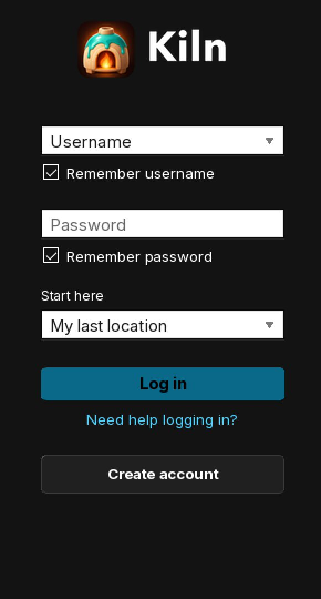
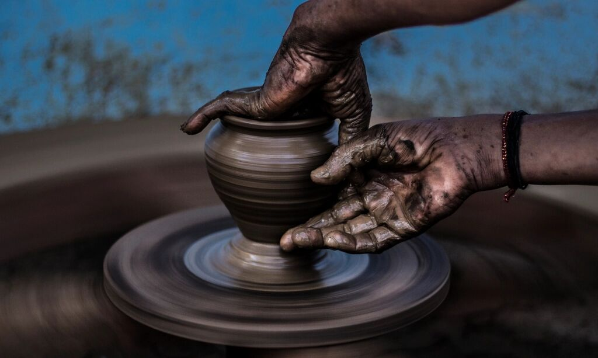
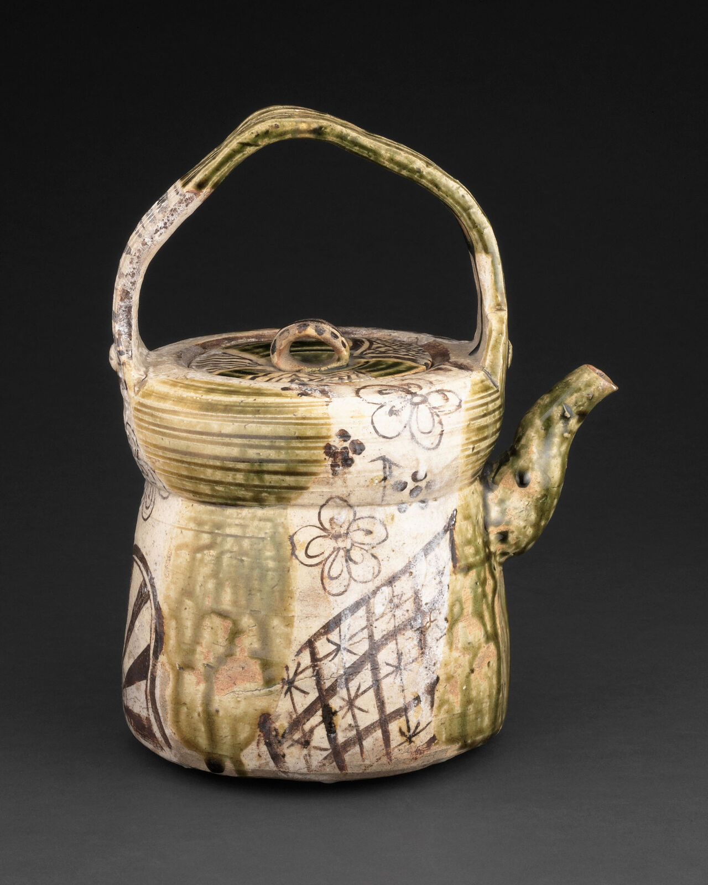
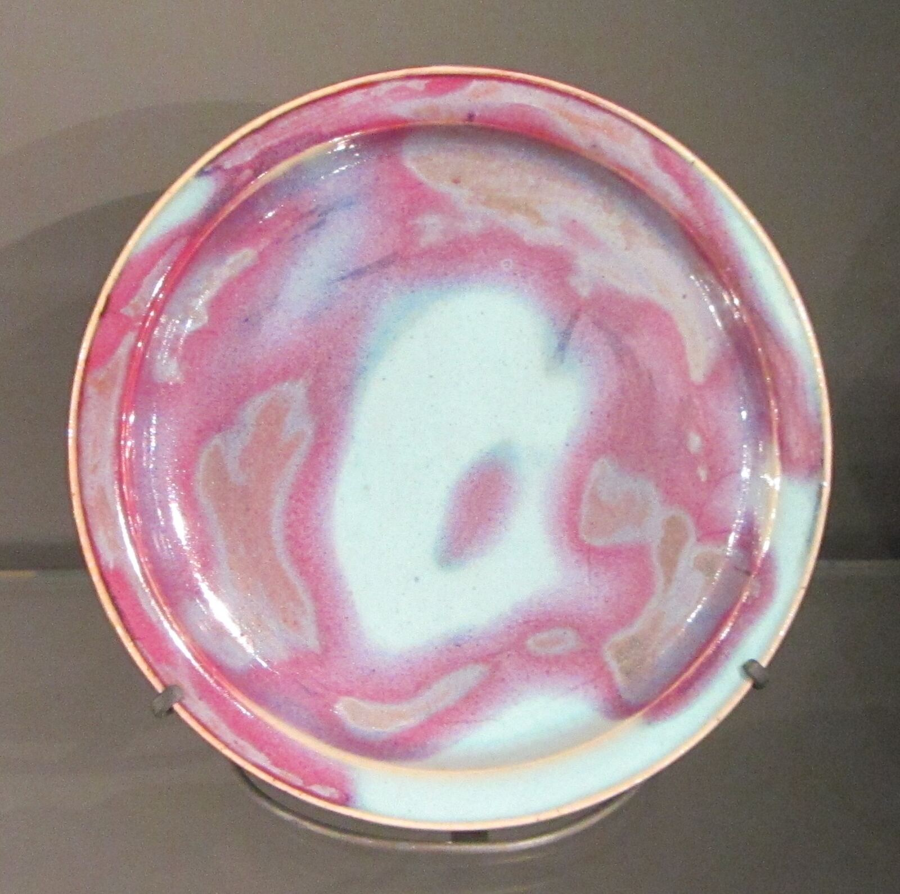
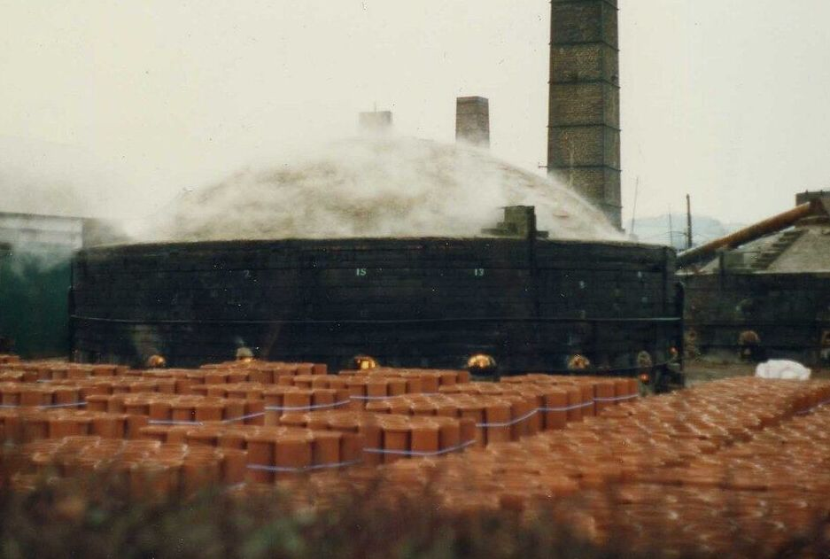
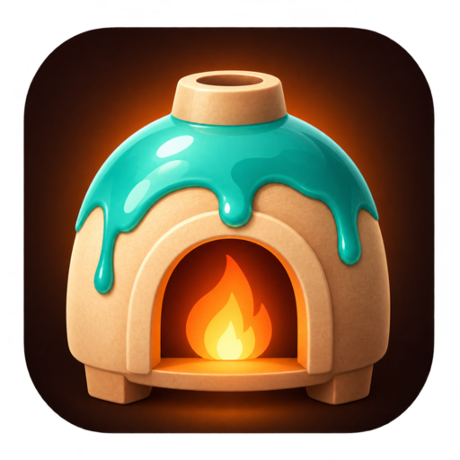

Рисование текстур
Рисуй прямо по грани в мире, слоями: базовый цвет, шероховатость и свечение. Попробуй на тестовой плитке.
В разработке


Вьюер Second Life со студией внутри: лепи, расписывай и обжигай свои работы, не выходя из мира.
Редактирование мешей во вьюере
Рисование текстур прямо на объекте
Посмотри в мире до загрузки
Туда и обратно с Blender
Следить на GitHub
Чашка, керамика
Лепка
Сначала придай форму прямо на месте.

Чашка, керамика
Развёрнуто
Затем разверни её и отметь швы.

Чашка, керамика
В глазури
Затем нанеси глазурь прямо на чашку.

Чашка, керамика
Обожжено, в мире
Потом обожги её и поставь на стол.
Рисуй прямо по грани в мире, слоями: базовый цвет, шероховатость и свечение. Попробуй на тестовой плитке.
В разработке
Выделяй вершины, рёбра или грани объекта прямо в мире и двигай, выдавливай или разрезай их.
В разработке
Выбрано 12 граней
Разворачивай, упаковывай и смотри швы прямо на объекте во время работы, а не в отдельной программе.
В планах
3 острова · занято 92% пространства
| Уровень | Треугольники |
|---|---|
| Высокий | 1,184 |
| Средний | 412 |
| Низкий | 128 |
| Минимальный | 36 |
Land impact 1
Создавай все четыре уровня детализации и физическую форму и смотри land impact до того, как заплатишь за загрузку.
В планах
Надевай и рездь свои работы локально, со своими текстурами, пока всё не будет как надо. Загружай один раз, в самом конце.
В планах
Blender подключён
cup_stoneware.glb
glTF 2.0 · синхронизировано 12 с назад
Отправить в BlenderДля крупных задач отправляй меш в Blender и обратно в glTF, без ручного экспорта.
В планах
Kiln основан на собственном вьюере Linden Lab и следит за его релизами, так что новые возможности Second Life приходят с каждым слиянием. У него свои настройки и кэш, и он работает рядом с Firestorm или официальным вьюером.

Печь — это место, где вылепленная глина и сырая глазурь становятся одним готовым изделием. Именно этот шаг Kiln переносит во вьюер.

Да. Kiln бесплатный, а его исходный код выпущен под LGPL-2.1 — той же лицензией, что и у вьюера, на котором он основан.
Публичной сборки пока нет. Следи за организацией Kiln на GitHub, чтобы узнать, когда будет готова первая превью-версия.
Нет. У Kiln своя папка установки, настройки и кэш, поэтому он работает рядом с Firestorm или официальным вьюером.
Для большого моделирования — да. Kiln берёт на себя правки между загрузками, а связь с Blender переносит меш туда и обратно.
Рисование и предпросмотр остаются на твоём компьютере. Обычную плату Second Life ты вносишь, только когда загружаешь готовую текстуру или меш.
Нет. Kiln — независимый сторонний вьюер, созданный в соответствии с Third Party Viewer Policy от Linden Lab. Linden Lab его не делает и не одобряет.

Kiln в разработке. Следи за организацией на GitHub, чтобы видеть работу в процессе и узнать, когда выйдет первая превью-версия.